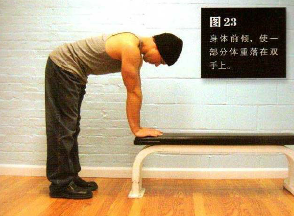
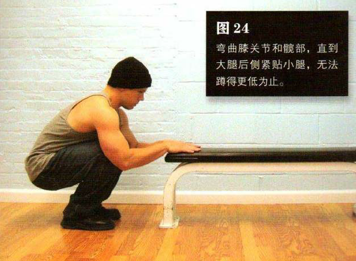

站在一个稳固的物体前，此物体的高度大约与你的膝盖等高，至少也要达到胫骨上部，小咖啡桌、椅子、床铺都是不错的选择。双腿分开，与肩同宽或略宽。双腿伸直，弯腰俯身，直到双手与面前的物体接触。身体前倾，使一部分体重落在双手上。
上半身尽量与地面平行，弯曲膝关节和髋部，直到大腿后侧紧贴小腿，无法蹲得更低为止。这是该动作的最低点。下蹲过程中你还需要弯曲双臂，在下降到最低点后腿部与手臂要同时发力，将身体推回到起始姿势。在整个动作过程中，脚跟始终不能抬离地面。
下降到最低点时该动作的难度最大，因为此时下肢需要承担身体的大部分重量。如果你觉得动作有难度，那就逐步加大动作幅度来慢慢适应。还有一种方法就是让双臂分担更多的身体重量，这样能够帮助你从最低点站起来。等腿部更强壮之后，你就可以试着减少双臂的用力，更多地依赖双腿。
初级标准：1 组，10 次
中级标准：2 组，各 20 次
高级标准：3 组，各 40 次